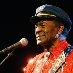
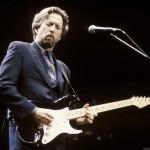

Aprendimos más de una cancion de tres minutos que lo que aprendimos en la escuela
Bruce Springsteen
Ha sido durante cinco décadas una de las principales figuras de la música popular. Es uno de los músicos más influyentes del último siglo
Ha alternado por más de cuatro décadas entre el rock y el folk

Es una de las leyendas más influyentes del Rock n´roll. Pese a su edad, él sigue realizando giras, aunque no les paga a sus músicos porque considera que tocar junto a él es un honor.

Es uno de los mejores guitarristas de la historia del Rock. Sus dotes como músico fueron reconocidos desde que era parte del grupo The Yardbirds, durante los años 60.
Desde fines de los 60, cuando era parte de The Stooges, Iggy sigue siendo considerado como una de los músicos más desquiciados de todos los tiempos
Se mantiene como guitarrista de los Rollig Stones, una de las bandas más importantes de toda la historia de la música
La intensa labor artística que continúa realizando , pese a su edad, le valió para ser reconocido con el Premio Príncipe de Asturias de este año

Es considerado como el padre del rock alternativo. A fines de los años 60 se hizo famoso con la banda The Velvet Underground, el día de hoy continúa haciendo música como solista
No solo es una de las grandes leyendas de la música, sino también es Caballero de la Orden del Imperio Británico